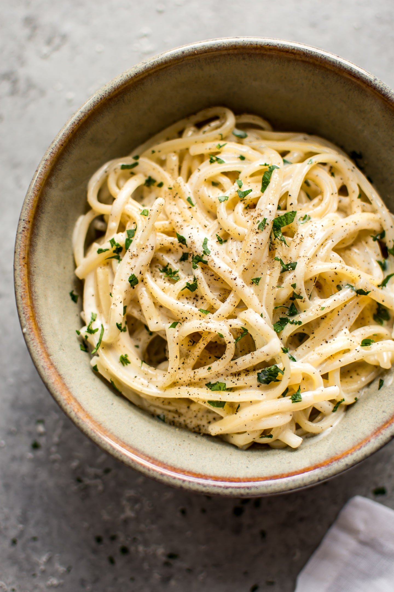

Creamy Garlic Pasta

Description
This is a recipe for the most delicious creamy garlic pasta. It was adapted from one that I got from my mother,
and it is gauranteed to be a comforting meal for you and your loved ones. It only takes 15 minutes to make, so
it's a perfect choice after a long day.
Ingredients
- 1 lb box penne rigate
- 2 tablespoons butter
- 2 garlic cloves, minced
- 2 tablespoons flour
- 3/4 cup chicken or beef broth
- 3/4 cup milk
- 2 tsp parsley flakes, salt and pepper to taste
- 1/3 cup grated parmesean cheese
Steps
- Mix butter and add garlic in a medium saucepan.
- Cook over medium for 1 minute.
- Add flour and cook 1 minute, stirring constantly.
- Stir in broth and milk and cook, stirring frequently, until sauce boils and thickens.
- Add parsley, salt, pepper, and cheese.
- Stir until cheese is melted.
- Toss hot pasta with sauce and serve immediately.